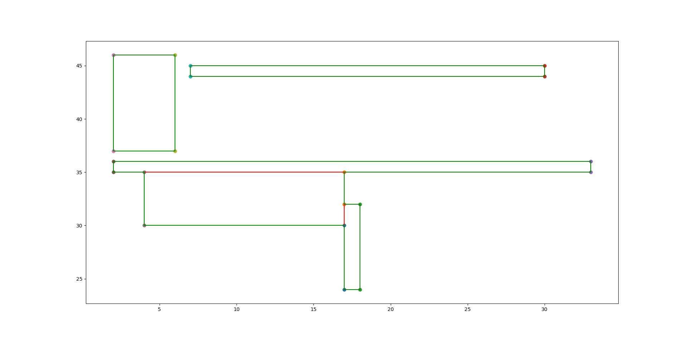

Input 6
5
2 37
6 46
4 30
17 35
2 35
33 36
7 44
30 45
17 24
18 32
Output 6
Measure = 163
Number of Contour Lines = 20
Contour Line Segments:-
17 24 18 24
4 30 17 30
17 32 18 32
17 35 33 35
2 35 4 35
2 36 33 36
2 37 6 37
7 44 30 44
7 45 30 45
2 46 6 46
2 35 2 36
2 37 2 46
4 30 4 35
6 37 6 46
7 44 7 45
17 24 17 30
17 32 17 35
18 24 18 32
30 44 30 45
33 35 33 36
Contour Length = 162
